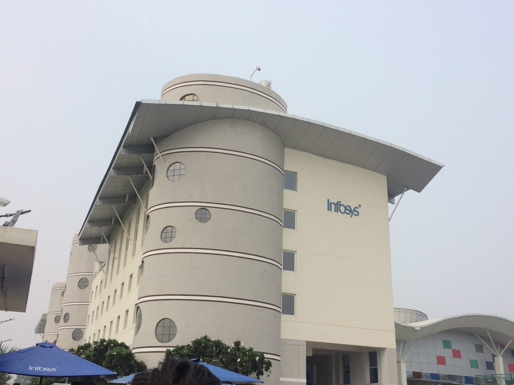
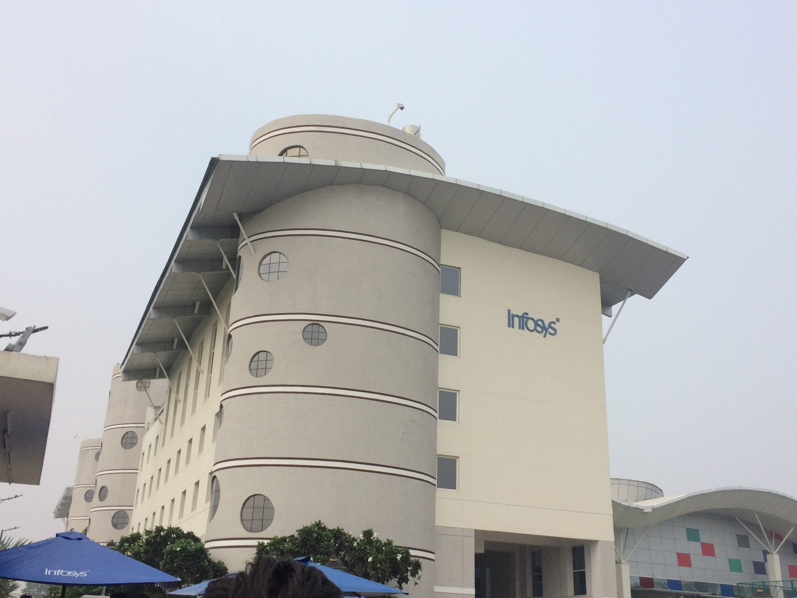
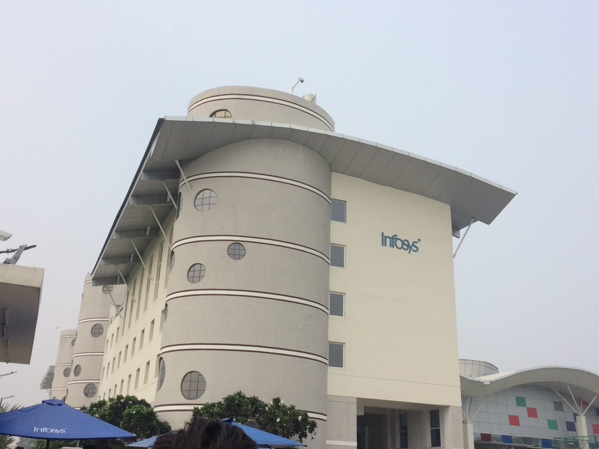
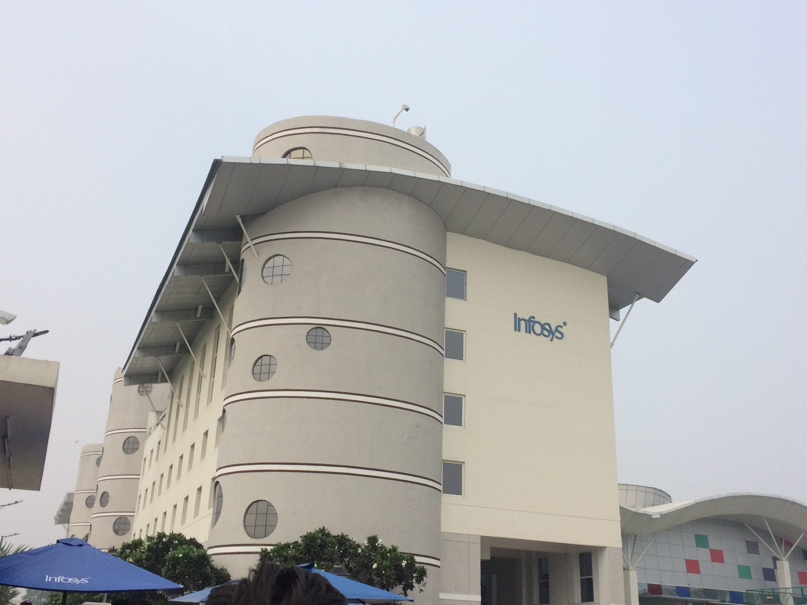

2016


 



 


Chitkara ACM Student Chapter, in collaboration with the Department of Computer Science and Engineering and GitHub, organized a “Github Hands-On Workshop” to promote the idea of the “Code Innovation Series”, a unique initiative to portray the value and profits Github offers, on November 25, 2020, from 5:00 P.M to 7:00 P.M The webinar consisted of a valuable lecture and a hands-on session by Mr. Kaushik Roy, Principal Architect, IncubateIND, who has been working in this field for a considerable time. Getting a response from nearly 187 students, the session was successfully handled by the faculty advisor Mr. Sarvjeet Singh. Students actively responded to the questions raised by the host, as well as asked their doubts through the chat option. The session ended with a vote of thanks by the handling team. It was indeed exhilarating and an informative session.
Chitkara ACM Student Chapter, in collaboration with the Department of Computer Science and Engineering and GitHub, organized a “Github Hands-On Workshop” to promote the idea of the “Code Innovation Series”, a unique initiative to portray the value and profits Github offers, on November 25, 2020, from 5:00 P.M to 7:00 P.M The webinar consisted of a valuable lecture and a hands-on session by Mr. Kaushik Roy, Principal Architect, IncubateIND, who has been working in this field for a considerable time. Getting a response from nearly 187 students, the session was successfully handled by the faculty advisor Mr. Sarvjeet Singh. Students actively responded to the questions raised by the host, as well as asked their doubts through the chat option. The session ended with a vote of thanks by the handling team. It was indeed exhilarating and an informative session.